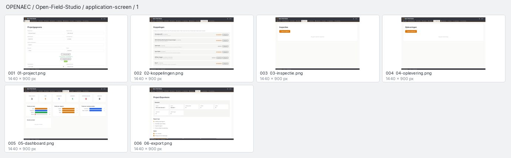
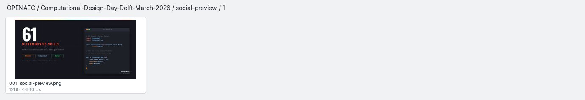
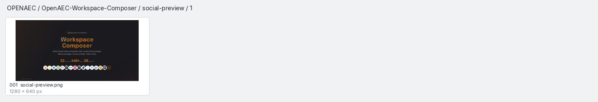

Open-Field-StudioBlad 1 · 6 beelden

Bronbestanden en afmetingen
- 001docs/screenshots/01-project.png1440 × 900 px
- 002docs/screenshots/02-koppelingen.png1440 × 900 px
- 003docs/screenshots/03-inspectie.png1440 × 900 px
- 004docs/screenshots/04-oplevering.png1440 × 900 px
- 005docs/screenshots/05-dashboard.png1440 × 900 px
- 006docs/screenshots/06-export.png1440 × 900 px
Social previews
2 beelden · 2 bladen
Bronbestanden en afmetingen

Bronbestanden en afmetingen